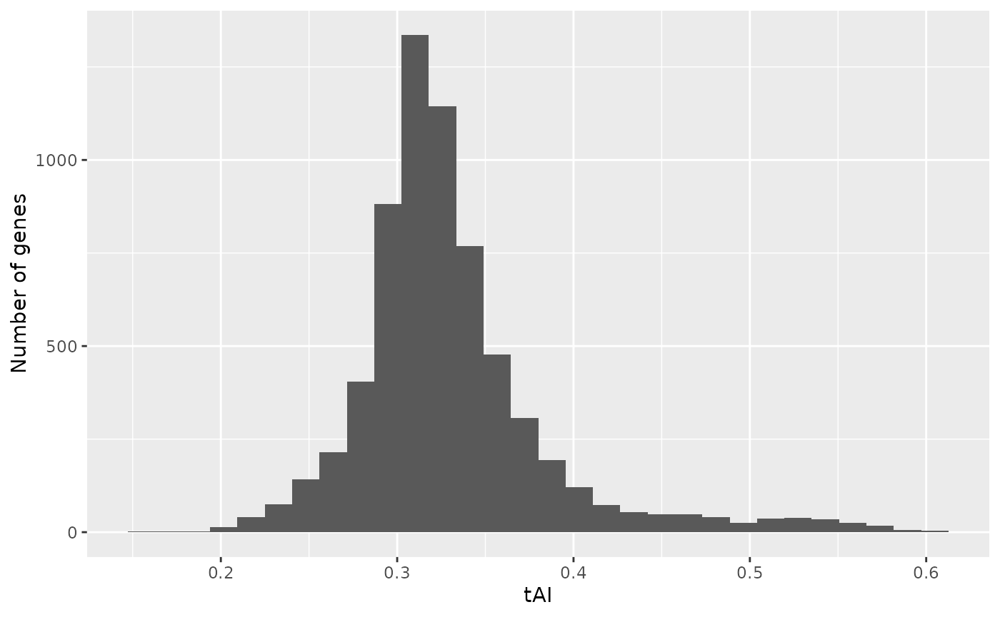

Codon usage bias is a phenomenon whereby different organisms exhibit distinct preferences for synonymous codons, which are multiple codons that encode the same amino acid. This variation in codon usage patterns is observed across all levels of life, from bacteria to eukaryotes. Codon usage bias is influenced by a variety of factors, including gene expression, GC content, and horizontal gene transfer. Understanding the causes and consequences of codon usage bias is important for a variety of fields, including molecular biology, evolutionary biology, and biotechnology.
cubar can be a helpful tool for researchers who are
interested in studying codon usage bias. It provides a variety of
functions that can be used to calculate and visualize codon usage bias
metrics.
Here, we demonstrate the basic functionalities of cubar
by analyzing the coding sequences (CDSs) of brewer’s yeast as an
example.
Sequences and the Genetic Code
First, quality control was performed on the provided Yeast CDS
sequences to ensure that each sequence had the correct start codon, stop
codon, and no internal stop codons. Additionally, the length of each
sequence was verified to be a multiple of three. These QC procedures can
be adjusted based on the input sequences. For example, if your sequences
do not contain 3’ stop codons, you can skip this check by setting
check_stop = FALSE.
# example data
yeast_cds
#> DNAStringSet object of length 6600:
#> width seq names
#> [1] 471 ATGAGTTCCCGGTTTGCAAGAA...GATGTGGATATGGATGCGTAA YPL071C
#> [2] 432 ATGTCTAGATCTGGTGTTGCTG...AGAGGCGCTGGTTCTCATTAA YLL050C
#> [3] 2160 ATGTCTGGAATGGGTATTGCGA...GAGAGCCTTGCTGGAATATAG YMR172W
#> [4] 663 ATGTCAGCACCTGCTCAAAACA...GAAGACGATGCTGATTTATAA YOR185C
#> [5] 2478 ATGGATAACTTCAAAATTTACA...TATCAAAATGGCAGAAAATGA YLL032C
#> ... ... ...
#> [6596] 1902 ATGCCAGACAATCTATCATTAC...CACGAAAAGACTTTCATTTAA YBR021W
#> [6597] 138 ATGAGGGTTCTCCATGTTATGC...AAAAAAAAAAAAAAAAGATGA YDR320W-B
#> [6598] 360 ATGTTTATTCTAGCAGAGGTTT...AATGCCGCGCTGGACGATTAA YBR232C
#> [6599] 1704 ATGGCAAGCGAACAGTCCTCAC...TTCCCAAAGAGTTTTAATTGA YDL245C
#> [6600] 906 ATGTTGAATAGTTCAAGAAAAT...TACTCTTTTATCTTCAATTGA YBR024W
# qc
yeast_cds_qc <- check_cds(yeast_cds)
yeast_cds_qc
#> DNAStringSet object of length 6574:
#> width seq names
#> [1] 465 AGTTCCCGGTTTGCAAGAAGTA...ACTGATGTGGATATGGATGCG YPL071C
#> [2] 426 TCTAGATCTGGTGTTGCTGTTG...AGCAGAGGCGCTGGTTCTCAT YLL050C
#> [3] 2154 TCTGGAATGGGTATTGCGATTC...CAAGAGAGCCTTGCTGGAATA YMR172W
#> [4] 657 TCAGCACCTGCTCAAAACAATG...GATGAAGACGATGCTGATTTA YOR185C
#> [5] 2472 GATAACTTCAAAATTTACAGTA...AAATATCAAAATGGCAGAAAA YLL032C
#> ... ... ...
#> [6570] 1896 CCAGACAATCTATCATTACATT...GAACACGAAAAGACTTTCATT YBR021W
#> [6571] 132 AGGGTTCTCCATGTTATGCTTT...ATGAAAAAAAAAAAAAAAAGA YDR320W-B
#> [6572] 354 TTTATTCTAGCAGAGGTTTCGG...TTTAATGCCGCGCTGGACGAT YBR232C
#> [6573] 1698 GCAAGCGAACAGTCCTCACCAG...AAGTTCCCAAAGAGTTTTAAT YDL245C
#> [6574] 900 TTGAATAGTTCAAGAAAATATG...TGGTACTCTTTTATCTTCAAT YBR024WCDSs sequences can be convert to codon sequences by
seq_to_codons or translated to corresponding amino acid
sequences with translate from Biostrings.
# convert a CDS to codon sequence
seq_to_codons(yeast_cds_qc[['YDR320W-B']])
#> [1] "AGG" "GTT" "CTC" "CAT" "GTT" "ATG" "CTT" "TCT" "TTC" "CTA" "AAC" "TCA"
#> [13] "CTT" "CTT" "TTC" "CTC" "CCT" "ATC" "TGC" "TTT" "TGT" "TTA" "TTA" "CAG"
#> [25] "TTG" "AAG" "GCT" "ACT" "TGT" "GCC" "GTT" "CGT" "GTG" "AAA" "AAA" "TAC"
#> [37] "TCG" "ATG" "AAA" "AAA" "AAA" "AAA" "AAA" "AGA"
# convert a CDS to amino acid sequence
Biostrings::translate(yeast_cds_qc[['YDR320W-B']])
#> 44-letter AAString object
#> seq: RVLHVMLSFLNSLLFLPICFCLLQLKATCAVRVKKYSMKKKKKRMany codon usage metrics depend on codon frequencies, which can be
calculated easily by the function count_codons.
# get codon frequency
yeast_cf <- count_codons(yeast_cds_qc)To interact with the genetic code, cubar provided a
helpful function to convert genetic code in Biostrings to a
handy table and an option to visualize possible codon-anticodon
pairing.
# get codon table for the standard genetic code
ctab <- get_codon_table(gcid = '1')
# plot possible codon and anticodon pairings
plot_ca_pairing(ctab)Codon usage indices
Most indices can be calculate with get_* series
functions and the return value is usually a vector with value names
identical to the names of sequences. Here we demonstrate how to
calculate various indices with the above yeast CDS data.
Effective Number of Codons (ENC)
# get enc
enc <- get_enc(yeast_cf)
head(enc)
#> YPL071C YLL050C YMR172W YOR185C YLL032C YBR225W
#> 53.00343 45.06356 56.01914 50.84984 53.29440 53.82957
plot_dist <- function(x, xlab = 'values'){
x <- stack(x)
ggplot(x, aes(x = values)) +
geom_histogram() +
labs(x = xlab, y = 'Number of genes')
}
plot_dist(enc, 'ENC')
#> `stat_bin()` using `bins = 30`. Pick better value with `binwidth`.
Fraction of optimal codons (Fop)
# get fop
fop <- get_fop(yeast_cds)
plot_dist(fop, 'Fop')
#> `stat_bin()` using `bins = 30`. Pick better value with `binwidth`.cubar provides a method to determine the optimal (or
“preferred”) codon for each codon subfamily based on regression of codon
usage against ENC. Preferred codons are more likely to be used in genes
that exhibit strong codon usage bias and tend to have lower ENC values.
Consequently, preferred codons will have negative coefficients in the
regression analysis. To view the optimal codons, you can manually run
the est_optimal_codons function.
optimal_codons <- est_optimal_codons(yeast_cds_qc, codon_table = ctab)
head(optimal_codons[optimal_codons$coef < 0 & optimal_codons$qvalue < 0.01, ])
#> aa_code amino_acid codon subfam coef pvalue qvalue
#> 1: A Ala GCT Ala_GC -0.08702058 0.000000e+00 0.000000e+00
#> 2: A Ala GCC Ala_GC -0.01876569 2.164990e-40 2.401170e-40
#> 3: R Arg AGA Arg_AG -0.13023392 0.000000e+00 0.000000e+00
#> 4: R Arg CGT Arg_CG -0.21009663 0.000000e+00 0.000000e+00
#> 5: N Asn AAC Asn_AA -0.05752254 1.600668e-292 2.871787e-292
#> 6: D Asp GAC Asp_GA -0.01846525 4.298281e-36 4.599915e-36Codon Adaptation Index (CAI)
# estimate RSCU of highly expressed genes
yeast_heg <- head(yeast_exp[order(-yeast_exp$fpkm), ], n = 500)
yeast_heg <- yeast_heg[yeast_heg$gene_id %in% rownames(yeast_cf), ]
rscu_heg <- est_rscu(yeast_cf[yeast_heg$gene_id, ], codon_table = ctab)
# calculate CAI of all genes
# note: CAI values are usually calculated based RSCU of highly expressed genes.
cai <- get_cai(yeast_cf, rscu = rscu_heg)
plot_dist(cai, xlab = 'CAI')
#> `stat_bin()` using `bins = 30`. Pick better value with `binwidth`.
tRNA Adaptation Index (tAI)
# get tRNA gene copy number from GtRNADB
path_gtrnadb <- 'http://gtrnadb.ucsc.edu/genomes/eukaryota/Scere3/sacCer3-mature-tRNAs.fa'
yeast_trna <- Biostrings::readRNAStringSet(path_gtrnadb)
trna_gcn <- table(data.table::tstrsplit(sub(' .*', '', names(yeast_trna)), '-')[[3]])
trna_gcn <- trna_gcn[names(trna_gcn) != 'NNN'] # copy of each anticodon
# calculate tRNA weight for each codon
trna_w <- est_trna_weight(trna_level = trna_gcn, codon_table = ctab)
# get tAI
tai <- get_tai(yeast_cf, trna_w = trna_w)
plot_dist(tai, 'tAI')
#> `stat_bin()` using `bins = 30`. Pick better value with `binwidth`.
FAQ
- What is subfamily in
cubar? For large codon family that has more than four synonymous codons,cubarwill break it into two subfamilies depending on the first two nucleotides of codons. For example, leucine is encoded by six codons in the standard genetic code.cubarwill break the six codons into two subfamilies:Leu_UUforUUAandUUG;Leu_CUforCUU,CUC,CUA, andCUG.